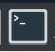

Manual bin refinement¶
Objectives
- Preparing input files for
VizBin - Projecting a t-SNE using
VizBinand examining bin clusters - Picking refined bins
- Export
VizBinclusters - Export potentially problematic contigs
- (Optional) Refining and filtering problematic contigs from bins
- (Optional) Comparing pre- and post-filtered bins via CheckM
- (Optional) Scripts for processing data with
ESOMana
Preparing input files for VizBin¶
What is VizBin?
VizBin is a handy, GUI-based tool for creating ordinations of our binning data using the t-Distributed Stochastic Neighbor Embedding (t-SNE) algorithm to project high-dimensional data down into a 2D plot that preserves clustering information. There's a really good video on YouTube that explains how the algorithm works in high-level terms, but for our purposes you can really consider it as a similar approach to a PCA or NMDS.
On its own, VizBin takes a set of contigs and performs the t-SNE projection using compositional data. We can optionally provide it files that annotate contigs as belonging to particular bins and a file that adds coverage data to be considered when clustering. Unfortuantely, at this stage VizBin only allows a single coverage value per contig, which is not ideal. This is because VizBin only uses coverage as a means to modify the visualisation, not the ordination itself. It is possible to create your own t-SNE projection using multiple coverage values, however this is beyond the scope of today's exercise, and here we will be providing VizBin with coverage values for sample1 only.
The only required input file for VizBin is a single .fna file of the concatenated bins. An additional annotation file containing per-contig coverage values and bin IDs can also be provided. Colouring contigs by bin is a really effective way to spot areas that might need refinement.
In the interests of time today, the input files have been generated and are provided in the 6.bin_refinement/ folder:
all_bins.fnais a concatenation of the bins of fragmented sub-contigs (fragmented to 20k)all_bins.sample1.vizbin.annis the annotation file containing per-subcontig coverage, label (bin ID), and length values.
Contig fragments as input for VizBin
When running VizBin, it is often preferable to split long contigs into smaller pieces in order to increase the density of clustering in the t-SNE. The data we are working with today are based on our bins output by DAS_Tool in the last binning exercise, but have been further processed using the cut_up_fasta.py script that comes with the binning tool CONCOCT to cut long contigs into 20k fragments. When reviewing our VizBin plots and outputs, it is important to remember that here we are looking at the fragmented sub-contigs, rather than the full complete contigs (the importance of this will be clear when we are reviewing our vb_count_table.txt later in this exercise).
For future reference, and for working with your own data, a step-by-step process for generating these files from the dereplicated bins generated by DAS_Tool has been provided as an Appendix.
For this section, we will be working within 6.bin_refinement/. Let's first have a quick look at the annotation file.
Navigate to working directory
Terminal output
This file is a comma-delimited table (csv file) that presents the information in the way that VizBin expects it. The order of rows in this file corresponds to the order of contigs in the concatenated FASTA file of our fragmented bins, all_bins.fna.
Create a few variations of the .ann file with various columns removed, in order to examine the different outputs they can generate.
code
Projecting a t-SNE and examining bin clusters¶
We can now use these files in VizBin to curate the contigs in our bins. We will load and view the data in a few different steps.
For this exercise, we will be using the Virtual Desktop on NeSI which allows us to use programmes with graphical user interfaces (GUI) within the NeSI computing environment.
Initiate the Virtual Desktop
- Click on File on the top left corner of the Jupyter Hub, and then select New Launcher. You can also click on the small + on the tabbed bar next to your terminal tab.
- Look for the Virtual Desktop icon and then click on centre of the icon.

- A new browser tab named 'TurboVNC:...' should appear and the Virtual Desktop should load.
- A successful instance of the Virtual Desktop should look like a desktop environment.
{kind=link}
Running VizBin: local vs remote
Running VizBin remotely (e.g. within NeSI) can be slow with full data sets. Running a GUI (such as a program like VizBin) remotely can also require additional set up on some PCs. For day-to-day work, we recommend installing VizBin on your local machine and downloading the relevant input files (e.g. via scp ...) to run locally.
Initiate VizBin within the Virtual Desktop environment¶
-
In the Virtual Desktop, click on the terminal icon.
 -
VizBinis a Java programme, therefore we will need to load the Java module for it to work. In the terminal, type the following to load the Java moduleCopy/paste in the Virtual Desktop
You will not be able to copy text from outside the Virtual Desktop and paste into the Virtual Desktop, in which case you will need to manually type these commands.
-
In the terminal, navigate to your directory where the Java file resides
Remember to replace
YOUR FOLDERwith your user name. -
Type the following into your Virtual Desktop terminal to initiate VizBin.
-
A successful launch of
VizBinwill look like the following:
{kind=link}
Load input files¶
Once VizBin is open, to get started, click the 'Choose...' button then navigate to the FASTA file all_bins.fna.
VizBin directory
It is likely that when we click on the 'Choose...' button, the directory that is open will be our NeSI home directory. In that case, we can type in the input FASTA file in the 'File Name' bar: /nesi/nobackup/nesi02659/MGSS_U/<YOUR FOLDER>/6.bin_refinement/all_bins.fna

Once this is imported, use the 'Show additional options' button to expose the advanced options, and add your 'bin only' .ann file into the 'Annotation file (optional)' field.

Executing the t-SNE¶
For now leave all other parameters as default. Click the 'Start' button to begin building the ordination. When it completes, you should see an output similar to the following:
Contigs coloured by bin¶

Additional annotations by length and coverage
If you input all_bins.sample1.vizbin.ann as your annotation file, you can see that the visualisation takes contig length (represented by point size) and coverage (represented by opacity) into account.

Similar to other projection techniques, we interpret the closeness of points as a proxy for how similar they are, and because of our .ann file we can see which contigs belong to the same bin.
Picking refined bins¶
We can use the interactive GUI to pick the boundaries of new bins, or to identify contigs which we do not believe should be retained in the data. Have a play around with the interface, testing out the following commands:
- Left-click and drag: Highlight an area of the ordination to zoom into
- Right-click, 'Zoom Out', 'Both Axes': Rest of the view
- Left-click several points: Create a selection of contigs to extract from the data
- Right-click, 'Selection', 'Export': Save the selected contigs into a new file
- Right-click, 'Selection', 'Clear selection': Clear the current selection
How you proceed in this stage is up to you. You can either select bins based on their boundary, and call these the refined bins. Alternatively, you could select outlier contigs and examine these in more detail to determine whether or not they were correctly placed into the bin. Which way you proceed really depends on how well the ordination resolves your bins, and it might be that both approaches are needed.
Today, we will run through an example of selecting potentially problematic (sub)contigs, and then deciding whether or not we want to filter these contigs out of our refined bins. We can use a combination of VizBin and seqmagick to remove contigs from bins where we do not trust the placement of the contig. We are aiming to reduce each bin to a trusted set of contigs.
1. Export VizBin clusters¶
First, for each VizBin cluster, select the area around the cluster (via multiple left-clicks around the cluster), right-click, 'Selection', 'Export'. Save this output as cluster_1.fna.
Try this for one or two clusters. In practice, we would do this for each VizBin cluster, saving each as a new cluster_n.fna file.
Highlight a cluster to zoom into¶

Select the cluster to export¶
Left-click several points around the cluster

Export the cluster¶
Right-click, 'Selection', 'Export'. Save the output as cluster_1.fna.

2. Export potentially problematic contigs¶
Select problematic contigs to examine¶
Zoom in, make a selection of potentially problematic contigs, and export as above.

Try this for one or two problematic contigs (or subsets of contigs). In practice, you could repeat this for all potentially problematic contigs, saving each export as a new contigs_n.fna file.
Note
For the subsequent step using vizbin_count_table_2022.sh, all exported cluster files must share a common prefix (e.g. cluster...fna), and all files of problematic contigs must also share a common prefix (e.g. contigs...fna).*
(Optional) Refining and filtering problematic contigs from bins¶
Create a count table of counts of our problematic contigs across each bin¶
You'll recall that, prior running VizBin, the contigs in our bins were first cut into fragments to improve the density of the clusters in the t-SNE projection. As such, the problematic contigs we have exported from VizBin are sub-contig fragments, rather than full contigs from our bins. It is entirely possible that different fragments of the original contigs have been placed in different clusters during our VizBin analysis - including cases where most sub-contigs have clustered with the bin we expect, and a small number have been identified as "problematic" (i.e. clustered with other bins). Based on the information from these extracted problematic sub-contigs, we now have to carefully consider whether or not we want to remove the full contig from our bin data.
To do this, we will generate a table containing each exported "problematic" sub-contig, and counts of how many of its sister sub-contigs (each of the other sub-contig fragments derived from the same original parent contig) fall into each VizBin cluster.
For this exercise, a folder of the exported files from VizBin for all clusters (cluster_[1-n].fna) and problematic sub-contigs (contigs_[1-n].fna) has been provided at vizbin_example_exports/
We will input these files to the shell script vizbin_count_table_2022.sh to generate a count table of the exported subcontigs across each VizBin cluster (vb_count_table.txt), as well as a working list of contigs to potentially remove from our final bin data (vb_omit_contigs_tmp.txt).
For future reference, a copy of this script is available for download here.
The only required input to vizbin_count_table_2022.sh is the path to the cluster and contigs files exported from VizBin. By default, the script looks for the prefix cluster... for the cluster file names, contig... for the files of problematic sub-contigs, and the file extension .fna for each. The arguments -s <contig_file_prefix> -c <cluster_file_prefix> -e <fasta_file_extension> can optionally be provided if your file name formats differ from the default.
View the output count table:
Example excerpt:
| Subcontig_ID | Subcontig_vb_cluster | cluster_1_count | cluster_2_count | cluster_3_count | cluster_4_count | cluster_5_count | Total_count |
|---|---|---|---|---|---|---|---|
| >bin_3_NODE_81_length_109410_cov_1.136244.concoct_part_1 | cluster_5 | 0 | 0 | 0 | 4 | 1 | 5 |
| >bin_3_NODE_289_length_18049_cov_1.596107.concoct_part_0 | cluster_5 | 0 | 0 | 0 | 0 | 1 | 1 |
| >bin_3_NODE_349_length_12681_cov_1.204936.concoct_part_0 | cluster_5 | 0 | 0 | 0 | 0 | 1 | 1 |
Note that in the case of the first contig from the excerpt above, the 'problematic' contig is only one of 5 sub-contigs, and all other 4 sub-contigs are in the expected cluster. In this case, we likely do not want to remove this contig from the bin.
Generate a list of contigs to exclude from filtering¶
Create a list of contigs identified from vb_count_table.txt that are not to be filtered out by seqmagick in the next step. For example, those contigs that have sub-contigs split across multiple VizBin clusters, and for which it's reasonable to actually keep the contig (such as when a flagged selected sub-contig exported from vizbin is in one unexpected cluster, but all other sub-contigs from that parent contig are in the expected cluster; in this case, you likely don't want to filter out the parent contig from the data set moving forward).
Below is an example. Simply replace the contig IDs between the quotes for as many lines as necessary for your data.
Write/append outputs and extracting contig ID
- The first line below must always have only one
>character, while all subsequent lines must have two (i.e.>>) to append correctly to the list. - We want the original contig ID here, not the sub-contig, so make sure to remove the
.concoct_part_nfragment number at the end if there is one.
Create final vb_omit_contigs_filtered.txt list of contigs to filter from bins¶
Using grep, filter contigs we wish to keep (after assessing vb_count_table.txt) out of the working vb_omit_contigs_tmp.txt list.
This creates vb_omit_contigs_filtered.txt, which we will then pass to seqmagick to filter these contigs out of our actual bin FASTA files.
Filter suspect contigs (based on VizBin analysis) from the bin data¶
Use seqmagick --exclude-from-file ... to filter problematic contigs (those contigs listed in vb_omit_contigs_filtered.txt) out of the initial unchopped bin FASTA files, generating final bins for downstream processing.
code
mkdir filtered_bins/
# Load seqmagick
module purge
module load seqmagick/0.8.4-gimkl-2020a-Python-3.8.2
# filter problematic contigs out of original bin files
for bin_file in example_data_unchopped/*.fna; do
bin_name=$(basename ${bin_file} .fna)
seqmagick convert --exclude-from-file vb_omit_contigs_filtered.txt ${bin_file} filtered_bins/${bin_name}.filtered.fna
done
Our filtered bins for downstream use are now in filtered_bins/
(Optional) Comparing pre- and post-filtered bins via CheckM¶
The end goal of this process is the generation of a final set of refined bins. Following this, the CheckM procedure should be re-run, this time on the refined filtered_bins/. This provides CheckM metrics for the final actual (filtered) bin set, and also an opportunity to compare between pre- and post-filtering to see if the VizBin bin refinement steps have, for example, improved the degree of contamination in the bins.
For this exercise, a copy of the output from running CheckM on the filtered_bins/ is available at 6.bin_refinement/filtered_bins_checkm.txt. View the previous CheckM output and the filtered bins output to compare via cat.
Content of filtered_bins_checkm.txt
| Bin Id | Marker lineage | # genomes | # markers | # marker sets | 0 | 1 | 2 | 3 | 4 | 5+ | Completeness | Contamination | Strain heterogeneity |
|---|---|---|---|---|---|---|---|---|---|---|---|---|---|
| bin_0.filtered | k__Bacteria (UID3060) | 138 | 338 | 246 | 1 | 327 | 9 | 1 | 0 | 0 | 99.59 | 3.79 | 0.00 |
| bin_1.filtered | k__Bacteria (UID3060) | 138 | 338 | 246 | 1 | 336 | 1 | 0 | 0 | 0 | 99.59 | 0.41 | 0.00 |
| bin_2.filtered | g__Staphylococcus (UID301) | 45 | 940 | 178 | 20 | 918 | 2 | 0 | 0 | 0 | 98.32 | 0.11 | 0.00 |
| bin_3.filtered | c__Betaproteobacteria (UID3959) | 235 | 414 | 211 | 1 | 408 | 5 | 0 | 0 | 0 | 99.97 | 0.90 | 0.00 |
| bin_4.filtered | c__Deltaproteobacteria (UID3218) | 61 | 284 | 169 | 10 | 274 | 0 | 0 | 0 | 0 | 94.08 | 0.00 | 0.00 |
| bin_5.filtered | o__Pseudomonadales (UID4488) | 185 | 813 | 308 | 25 | 787 | 1 | 0 | 0 | 0 | 96.87 | 0.11 | 0.00 |
| bin_6.filtered | k__Bacteria (UID2565) | 2921 | 149 | 91 | 11 | 136 | 2 | 0 | 0 | 0 | 90.66 | 0.61 | 0.00 |
| bin_7.filtered | p__Cyanobacteria (UID2143) | 129 | 471 | 367 | 0 | 470 | 1 | 0 | 0 | 0 | 100.00 | 0.14 | 0.00 |
| bin_8.filtered | f__Bradyrhizobiaceae (UID3695) | 47 | 693 | 296 | 3 | 690 | 0 | 0 | 0 | 0 | 99.47 | 0.00 | 0.00 |
| bin_9.filtered | g__Vibrio (UID4878) | 67 | 1130 | 369 | 4 | 1125 | 1 | 0 | 0 | 0 | 99.46 | 0.03 | 0.00 |
Content of checkm.txt
| Bin Id | Marker lineage | # genomes | # markers | # marker sets | 0 | 1 | 2 | 3 | 4 | 5+ | Completeness | Contamination | Strain heterogeneity |
|---|---|---|---|---|---|---|---|---|---|---|---|---|---|
| maxbin.001.fasta | k__Bacteria (UID3060) | 138 | 338 | 246 | 1 | 327 | 9 | 1 | 0 | 0 | 99.59 | 3.79 | 0.00 |
| maxbin.002.fasta | k__Bacteria (UID3060) | 138 | 338 | 246 | 1 | 336 | 1 | 0 | 0 | 0 | 99.59 | 0.41 | 0.00 |
| metabat.10_sub | g__Staphylococcus (UID301) | 45 | 940 | 178 | 20 | 918 | 2 | 0 | 0 | 0 | 98.32 | 0.11 | 0.00 |
| metabat.11 | c__Betaproteobacteria (UID3959) | 235 | 414 | 211 | 1 | 408 | 5 | 0 | 0 | 0 | 99.97 | 0.90 | 0.00 |
| metabat.12 | c__Deltaproteobacteria (UID3218) | 61 | 284 | 169 | 10 | 274 | 0 | 0 | 0 | 0 | 94.08 | 0.00 | 0.00 |
| metabat.2 | o__Pseudomonadales (UID4488) | 185 | 813 | 308 | 25 | 787 | 1 | 0 | 0 | 0 | 96.87 | 0.11 | 0.00 |
| metabat.3_sub | k__Bacteria (UID2565) | 2921 | 149 | 91 | 11 | 136 | 2 | 0 | 0 | 0 | 90.66 | 0.61 | 0.00 |
| metabat.4 | p__Cyanobacteria (UID2143) | 129 | 471 | 367 | 0 | 470 | 1 | 0 | 0 | 0 | 100.00 | 0.14 | 0.00 |
| metabat.5 | f__Bradyrhizobiaceae (UID3695) | 47 | 693 | 296 | 3 | 690 | 0 | 0 | 0 | 0 | 99.47 | 0.00 | 0.00 |
| metabat.7 | g__Vibrio (UID4878) | 67 | 1130 | 369 | 4 | 1125 | 1 | 0 | 0 | 0 | 99.46 | 0.03 | 0.00 |
An example of an updated slurm script to run CheckM on the filtered_bins/ is as follows:
code
The data you have been working with was created using the cut_up_fasta.py script that comes with the binning tool CONCOCT. It was run to cut contigs into 20k fragments, to better add density to the cluster. If you would like to visualise the data using different contig fragment sizes, you can create these using the following commands (replace YOUR_CONTIG_SIZE with the size of interest, e.g. 10000):
code
module purge
module load CONCOCT/1.0.0-gimkl-2018b-Python-2.7.16
mkdir custom_chop/
# Fragment contigs within each bin, outputting to custom_chop/
for bin_file in example_data_unchopped/*;
do
bin_name=$(basename ${bin_file} .fna)
cut_up_fasta.py -c YOUR_CONTIG_SIZE -o 0 --merge_last ${bin_file} > custom_chop/${bin_name}.chopped.fna
done
# Concatenate the chopped bins into single .fna
cat custom_chop/*.fna > all_bins_custom_chop.fna
You can open all_bins_custom_chop.fna in VizBin to view the clustering with this new fragmentation threshold.
If you wish to also provide an annotation file to colour by bin, this can be generated with the following:
code
# Set up annotation file headers
echo "label" > custom_chop.vizbin.ann
# loop through custom_chop .fna files
for bin_file in custom_chop/*.fna; do
# extract bin ID
binID=$(basename ${bin_file} .fna)
# loop through each sequence header in bin_file, adding binID to custom_chop.vizbin.ann for each header present
for header in `grep ">" ${bin_file}`; do
# Add binID to vizbin.ann for each header present
echo "${binID}" >> custom_chop.vizbin.ann
done
done
If you wish to generate the full annotation file, including coverage and length values, you will need to go through the process outlined in the Appendix for this exercise.
(Optional) Scripts for processing data with ESOMana¶
A suite of tools for creating input files for ESOMana can be found on github here.
The tool ESOMana can be downloaded from SourceForge.